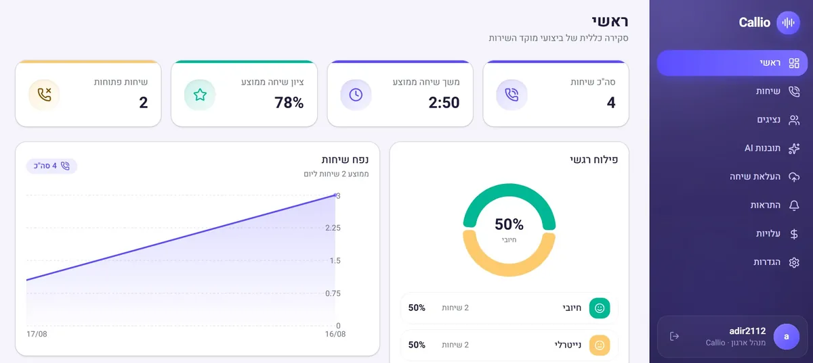

מערכת CRM לעסק קטן צריכה לענות על שאלה אחת פשוטה: מה קורה עם כל ליד שנכנס, ומה קרה בפועל בשיחה איתו. רוב המערכות בשוק - Hubspot, Zoho, Monday, פיפדרייב ואחרות - נותנות טבלה יפה עם שמות, סטטוסים ותאריכים. אבל אף אחת מהן לא אומרת לך מה הלקוח באמת אמר בטלפון, למה הוא לא סגר, ואיפה העובד שלך איבד אותו. זו בדיוק הפער שבגללו עסקים קטנים קונים CRM, ממלאים אותו שבועיים, ואז זונחים אותו - כי הוא דורש הקלדה ידנית ולא נותן תמורה אמיתית. הפתרון האמיתי הוא CRM שמתעד את השיחה עצמה, לא רק את העובדה שהיא התקיימה.
מתי אקסל מפסיק להספיק
כמעט כל עסק מתחיל את ניהול הלקוחות שלו באקסל. זה טבעי — זה זמין, מוכר, וזה עובד... עד שהוא מפסיק לעבוד. חמישה סימנים שאומרים שהנקודה הזו כבר הגיעה: מחפשים לקוח בין כמה גיליונות, וואטסאפ ומייל ולא מוצאים אותו; שני אנשים בצוות לא רואים את אותו הדבר, כי כל אחד שומר גרסה משלו; פניות נופלות בין הכיסאות כי הן נעלמות בתוך שלל הטאבים; אי אפשר לדעת כמה לידים הפכו ללקוחות בלי עבודה ידנית; והצוות גדל אבל התהליך נשאר אישי מדי ותלוי במי שבנה אותו. אקסל הוא כלי מצוין להתחלה — הבעיה מתחילה כשהוא הופך לתשתית היחידה שהעסק רץ עליה.
הבעיה: CRM ריק מתוכן הוא עוד עומס, לא כלי עבודה
בעסק קטן אין איש צוות שתפקידו להקליד הערות אחרי כל שיחה. המוכר מדבר עם הלקוח, לפעמים סוגר, לפעמים לא, ועובר הלאה ללקוח הבא. אם הוא לא מעדכן את ה-CRM באותו רגע - והוא לרוב לא - הנתון נעלם. בעל העסק מסתכל על הדשבורד ורואה "סטטוס: בטיפול" על ליד שבעצם כבר אמר "לא מעוניין" לפני שבוע. התוצאה: הנתונים במערכת לא אמינים, ההחלטות מתקבלות לפי תחושת בטן, ובסופו של דבר אף אחד לא פותח את המערכת כי היא לא משקפת את המציאות. זו הסיבה שרוב פרויקטי ה-CRM בעסקים קטנים נכשלים לא בגלל המערכת עצמה, אלא בגלל שאין לה מקור מידע אמין שמזין אותה בלי מאמץ אנושי.
הפתרון: Callio כשכבת האמת שמזינה את ה-CRM שלך
זו בדיוק הסיבה ש-A.L Systems, בניהולו של אדיר לוי משדרות, בנתה את Callio - מאזינה לכל שיחת טלפון, מתמללת אותה, ומזהה אוטומטית את מה שחשוב - סיבת פנייה, התנגדות, הבטחה, מחיר שסוכם, או תאריך חזרה. את כל זה היא דוחפת ישירות לכרטיס הלקוח ב-CRM הקיים שלכם, כך שהמערכת מתעדכנת מעצמה בלי שאף אחד יצטרך להקליד סיכום שיחה. במקום CRM שמחכה שמישהו יזין אליו נתונים, מקבלים CRM שמתמלא לבד מהשיחות האמיתיות שקורות בעסק:

- תיעוד אוטומטי של כל שיחה - כל שיחה נכנסת ויוצאת מתומללת ומסוכמת תוך דקות, כולל זיהוי נושא הפנייה והתוצאה שלה, בלי שהעובד יצטרך לכתוב מילה.
- עדכון שדות CRM בזמן אמת - Callio מזהה מתוך השיחה פרטים כמו תקציב, תאריך יעד או התנגדות מחיר, ומעדכנת את השדות הרלוונטיים בכרטיס הלקוח אוטומטית.
- ניתוח סיבות אי-סגירה - במקום לנחש למה עסקאות נופלות, רואים בפועל את ההתנגדות שחזרה הכי הרבה פעמים החודש - מחיר, זמינות, או חוסר אמון במוצר.
- מעקב אחרי עמידה בתסריט - לבעלי עסק עם כמה אנשי מכירות, Callio מראה מי אכן שואל את השאלות שצריך ומי מדלג עליהן, בלי צורך להאזין ידנית לשיחות.
- התראות על לידים חמים שנשכחו - אם לקוח אמר בשיחה שהוא רוצה לחזור ולדבר השבוע והעובד לא קבע תזכורת, המערכת מזהה את זה ומעלה דגל.
- שילוב עם המערכת הקיימת - Callio לא מחליפה את ה-CRM שיש לכם - היא מתחברת אליו ומעשירה אותו, כך שאין צורך ללמד את הצוות כלי חדש.
דוגמה: עסק לשיפוצי בית עם שלושה אנשי מכירות
עסק קטן לשיפוצים מקבל כ-40 פניות טלפוניות בשבוע דרך קמפיינים בפייסבוק. לפני Callio, ה-CRM הכיל בעיקר שם וטלפון, ולרוב סטטוס 'לבדוק' שלא השתנה שבועות. אחרי חיבור Callio ל-CRM, כל שיחה נכנסת מתועדת אוטומטית: כשלקוח אומר 'אני צריך שיפוץ מטבח, התקציב שלי בערך 40 אלף שקל, ואני רוצה להתחיל אחרי החגים' - השדות 'סוג עבודה', 'תקציב משוער' ו'תאריך רצוי' מתעדכנים לבד בכרטיס שלו. בעל העסק בודק בסוף השבוע דוח שמראה שמתוך 40 שיחות, 14 נפלו על 'התקציב גבוה מדי', ושאיש מכירות אחד לא מציין מעולם זמינות התחלה - בדיוק הנקודה שגרמה ל-5 לידים לא לחזור. במקום לנחש, הוא יודע בדיוק מה לתקן בשיחה הבאה.
מה עדיף: CRM עם הרבה פיצ'רים או CRM שמתעדכן לבד?
עסקים קטנים נוטים לבחור CRM לפי כמות הפיצ'רים - אוטומציות שיווק, דוחות מתקדמים, אינטגרציות. אבל פיצ'ר שדורש הקלדה ידנית לא ינוצל, לא משנה כמה הוא מתקדם. השאלה הנכונה היא לא 'מה המערכת יודעת לעשות' אלא 'כמה מהעבודה היא עושה בעצמה'. CRM בסיסי שמתעדכן אוטומטית מתוך שיחות אמיתיות שווה יותר מ-CRM מפואר שנשאר ריק.
למה זה קריטי דווקא בעסק קטן ולא רק בארגון גדול
בחברה גדולה יש צוות תפעול שאוכף הקלדת נתונים ולפעמים אפילו מאזין לשיחות באופן ידני. בעסק קטן אין את זה - בעל העסק הוא גם המוכר, גם המנהל וגם מי שאמור לבדוק את התוצאות. לכן דווקא בעסק קטן, מערכת שמבצעת את התיעוד לבד שווה יותר, כי אין מי שיעשה את זה ידנית.
התחלה הדרגתית בלי להחליף מערכות
אין צורך לנטוש CRM קיים כדי להתחיל להשתמש ב-Callio. ההתקנה מתבצעת לצד המערכת הקיימת, מתחברת לקו הטלפון או למוקד השיחות, ומתחילה להזין נתונים תוך ימים ספורים - כך שרואים תוצאה לפני שמשקיעים בשינוי תהליכי עבודה.